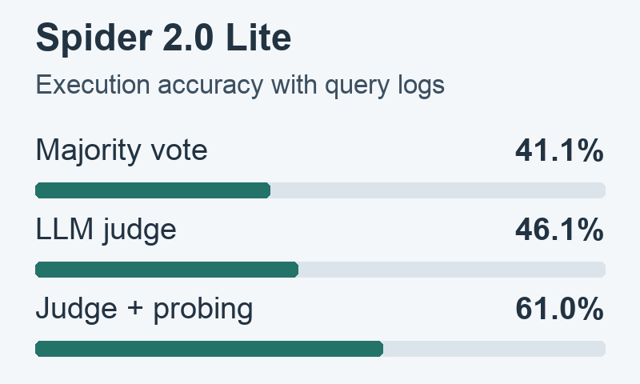

arXiv preprint, June 2026
SOMA-SQL
Resolving Multi-Source Ambiguity in NL-to-SQL via Synthetic Log and Execution Probing
* Equal contribution
When one question has several meanings
An analyst asks which New York regions performed best last quarter. Ranking by revenue can produce a different answer from ranking by deals closed. Even after choosing a metric, the query has to use the right geographic unit and quarter.
We generate examples that record how earlier SQL resolved choices like these. For a new question, the agent retrieves relevant examples and generates candidate queries. If candidates disagree about how a value is stored, the agent can run a small query to check the database, then use the result to revise its SQL.
Results
In April 2026, SOMA-SQL ranked first on Spider 2.0 Lite with 72.02% execution accuracy. In a separate experiment using the same candidate queries, execution probes helped the agent repair answers that voting alone missed.
